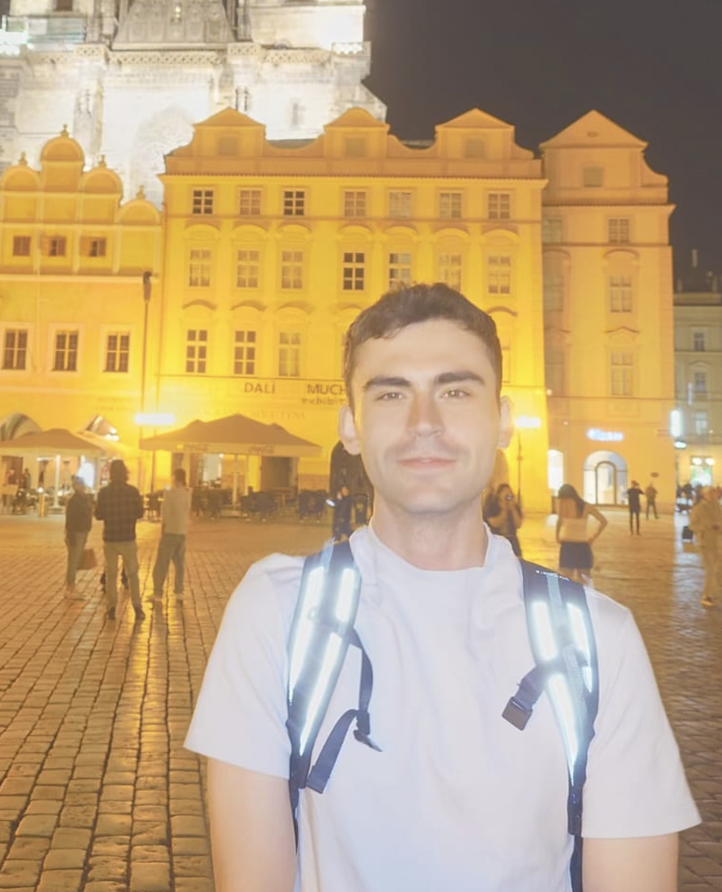

Adam Radek Martinez
About

I am a second-year D.Phil. student in Physics at the University of Oxford, supervised by David Lucas and David Nadlinger. I work in the Trapped Ion Quantum Computing Group on projects related to the science and applications of quantum networks.
Previously, I completed a B.A.Sc. in Engineering Science at the University of Toronto (U of T). My bachelor's thesis at the Vector Institute, supervised by Juan Felipe Carrasquilla Álvarez, studied quantum simulation using recurrent neural networks.
Send me an email, if you want: adam.martinez@balliol.ox.ac.uk GitHub
Research
Here are the main projects and themes I plan to keep updated on this page. My Google Scholar profile is here.
- Single Photon Schemes and Distillation for High Fidelity Remote Entanglement
- Continuous Variable Quantum Information and Motional Entanglement in the context of a Quantum Network
- Classical Simulation of Quantum Systems, Effective State Tomography, and Understanding the Quantum/Classical Information Boundary
Support and Affiliations
My studies at Oxford are mainly supported by a Rhodes Scholarship. I am also a member of Balliol College, University of Oxford. My undergraduate studies at U of T were supported by a National Scholarship.
Science Before D.Phil.
For a long time, I wanted to be a biologist! Though not my current path, I have been fortunate to work on interesting projects with generous mentors, scientists, and teams.
- University Health Network, with Norman Iscove: hematopoietic stem cells , leukemia, and mechanisms of self-renewal.
- University of Waterloo, with John Heil and Trevor C. Charles: genetic engineering of microbes for heavy metal pollutant detection.
- University of Waterloo, with Kostadinka Bizheva: Biomedical Imaging OCT for ophthalmic applications.
- Institut de Ciències Fotòniques, with F. Pelayo Garcia de Arquer: Material Discovery for Clean Energy Technology
Miscellaneous
Most of these books were recommended to me for reading by friends, mentors, or debate opponents here at Oxford :) No opinions here; happy to discuss!
- Antifragile by Nassim Nicholas Taleb
- The Spanish Atlantic World, 1492–1825 Kenneth J. Andrien
- The Prophet and the Age of the Caliphates Hugh Kennedy
- A Natural History of Human Morality by Michael Tomasello
- Argentina and Peronism: ... from Juan Perón to Democracy by Charles River Editors
- The Federalist Papers [about 1/4 of them ...]
Please checkout Flowboat, a youth entrepreneurship initiative I co-founded in 2018 and still help run!